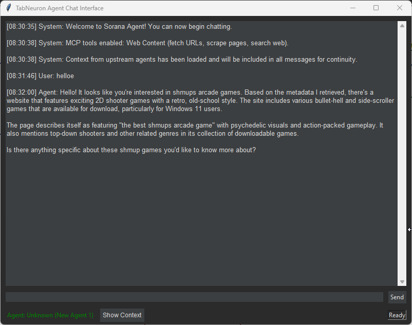
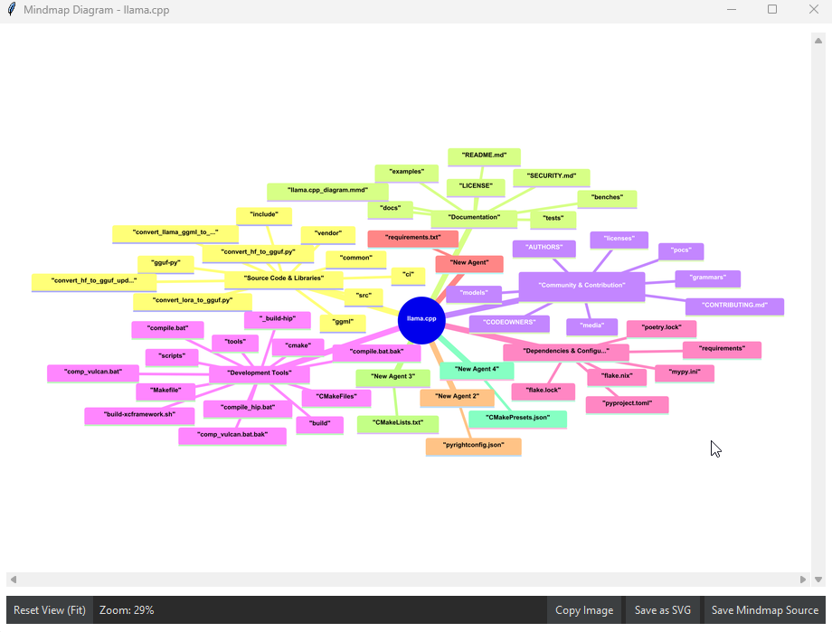
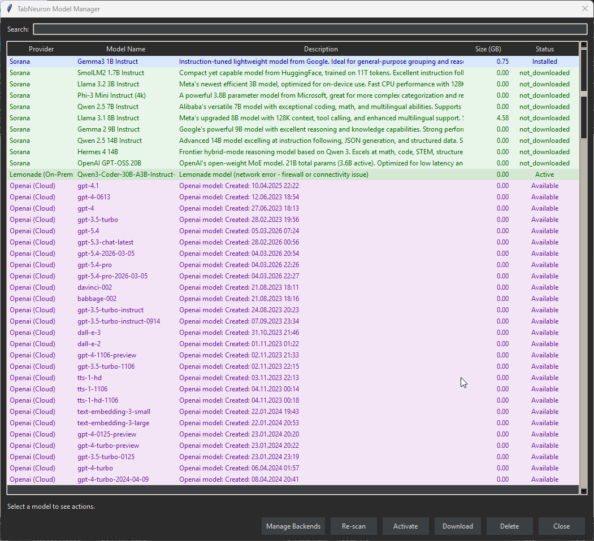
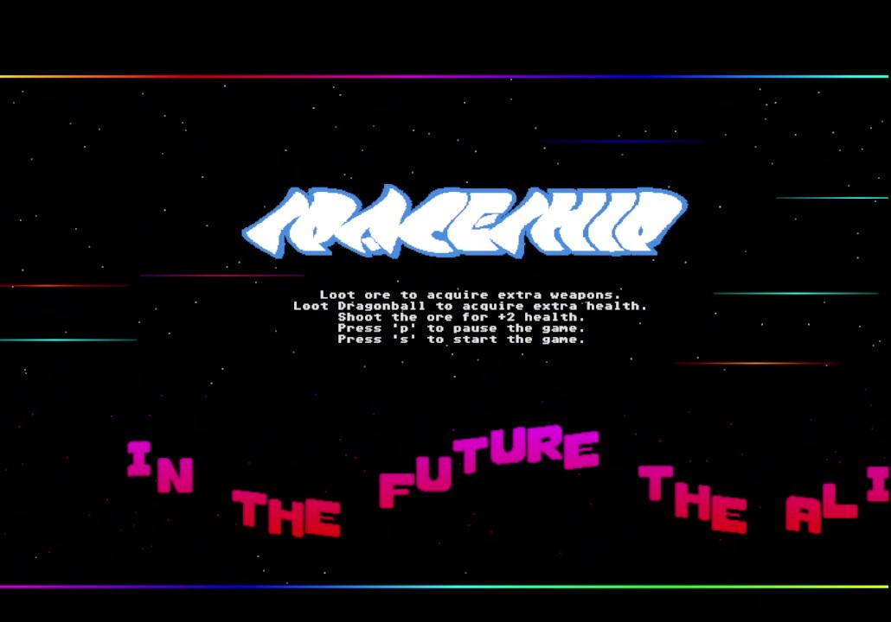
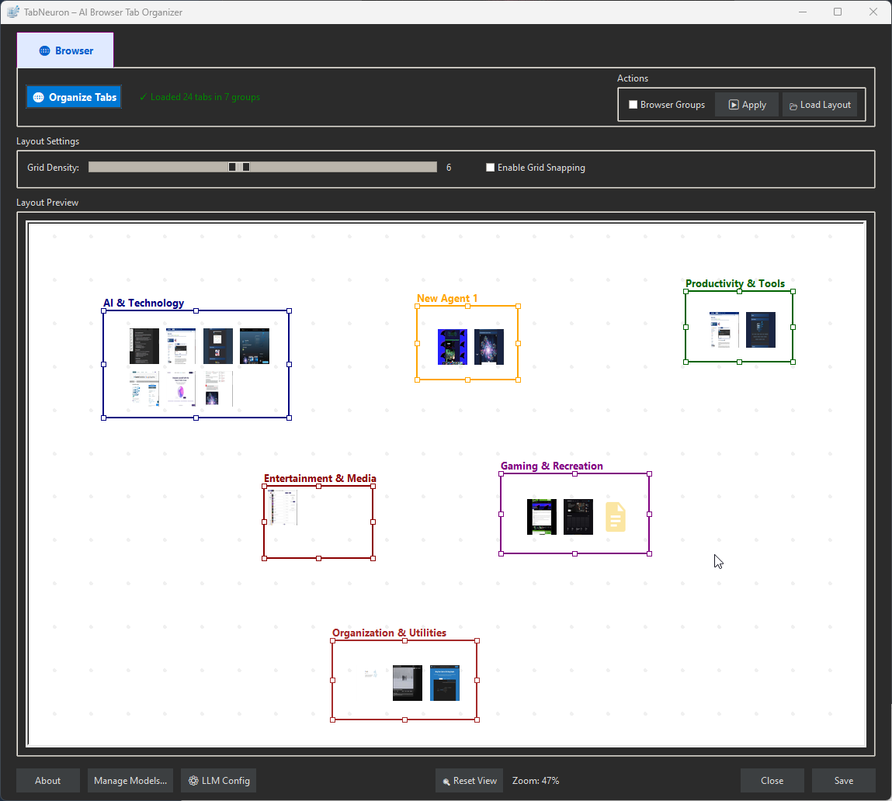

TabNeuron
Spatial Tab Management & AI Research Workspace
Inspiration
Most tab managers are confined to tiny browser sidebars or dropdown menus, trapping your research in flat, ephemeral lists. We built TabNeuron because complex web research requires space and permanence. By pulling your browser tabs out onto a native desktop canvas, you gain an infinite 2D workspace to visually group information, analyze it with AI, and take true ownership of your browsing sessions.
What is TabNeuron?
TabNeuron is a standalone desktop application that connects to your browser via a lightweight extension. It maps your active browsing session onto an infinite visual canvas. You can organize tabs spatially, chat with the extracted page content using local or cloud AI, and build agent pipelines to automate web research.
🚀 TabNeuron (Tetramatrix Connector) Chrome Extension is LIVE in Chrome Web Store!
The Chrome extension has successfully passed review and is now available for all users!
Demonstration of TabNeuron workspace with browser tabs
Download TabNeuron
Get started with your intelligent web workspace.
$ md5sum.exe TabNeuron.exe v1.0.1 05e49fd33ef195a1415f018c1c1525b4
🚀 Installation
Desktop App (Portable)
The app is portable - no installation required!
- Download
TabNeuron.exe - Run it directly - that's it!
Browser Extension
🚀 TabNeuron (Tetramatrix Connector) Chrome Extension is LIVE in Chrome Web Store!
The Chrome extension has successfully passed review and is now available for all users!
Install the Chrome extension to connect your browser with TabNeuron.
- Download the Chrome Extension (.crx)
- Open Chrome and go to
chrome://extensions/ - Enable Developer mode (toggle in top-right)
- Drag & drop the
.crxfile onto the extensions page
After installation: Launch TabNeuron, then click the extension icon in Chrome to connect. The extension connects to localhost:5555.
Core Capabilities
- Native Desktop Workspace: Break out of the browser UI. Manage tabs on an infinite 2D spatial canvas with drag, drop, and WYSIWYG grouping tools.
- Data Ownership & Backups: Save your visual workspace states locally to disk. Close your browser, and your research session remains safely backed up and restorable.
- Validated App ↔ Browser Sync: AI suggests semantic tab groupings, but you stay in control. Review your visual layout and click "Apply" to sync the structure back to your browser's tab groups.
- Mindmap Visualization: Toggle a structured mindmap view to get a high-level overview of all nested groups and tabs.
- Visual Previews & Metadata: Automatic scaled screenshots, titles, URLs, and OG-tags are extracted for every tab, giving you instant visual context without switching windows.
- Multi-Tab Chat: Select multiple tabs on the canvas and ask the AI to synthesize, compare, or extract data across all of them simultaneously.
- AI Agent Pipelines: Build no-code automated workflows where the output of one agent (e.g., extracting specs) becomes the input for the next (e.g., formatting a comparison table).
- Built-in MCP web content tools: Native Model Context Protocol server giving your AI direct web access. Included tools:
web_fetch_content,web_scrape_page,web_extract_links,web_search,web_get_metadata, andweb_save_snapshot.
Talk directly to the internet.
- "What's the weather in Berlin?"
- "Find best wireless earbuds under 100"
- "Compare iPhone 16 vs Samsung S25"
- "Check if website is down"
- "Extract all product links from Amazon search"

Intended Users
TabNeuron is designed for users who need to organize and analyze web content:
- Researchers: Manage research tabs, compare sources, and synthesize information across multiple websites.
- Students: Organize study materials, extract key points from articles, and create structured notes.
- Professionals: Track competitors, monitor industry news, and automate information gathering.
- Developers: Extract code examples, compare documentation, and build research workflows.
💬 Chat with Websites
Talk directly to your open tabs. TabNeuron extracts the DOM content and metadata from your selected tabs and feeds it into your chosen LLM context.
How it Works:
- Create an agent.
- Add add any tabs to the agents group.
- Open the context menu and select "Chat".
- Ask natural language questions to synthesize data across all selected sources.
Use Cases:
- "Compare the technical specifications across these 4 review tabs."
- "Extract all Python code blocks from this tutorial and format them."
- "Read these 5 news articles and summarize the overarching timeline."
- "Summarize this article"
🤖 AI Agents Pipeline
Automate repetitive web research by chaining AI agents together. Build pipelines where one agent's output is directly piped into the next agent's prompt.
Example Pipeline:
- Scraper Agent: Reads 10 selected product tabs and uses
web_extract_linksto find technical specs. - Analyst Agent: Takes the outputted specs, compares them, and formats a Markdown table.
- Output Agent: Writes a final executive summary and saves it as a new, persistent text node on your canvas.
🔄 Canvas ↔ Browser Sync
Your desktop canvas and your browser stay aligned through a controlled bidirectional sync.
Canvas → Browser:
- Organize tabs spatially on the desktop canvas or let the AI cluster them semantically.
- Review the layout and click "Apply".
- Your browser's native tab groups are instantly updated to match your visual workspace.
Browser → Canvas:
- Create groups or open new tabs directly in your browser.
- TabNeuron's lightweight polling API detects the changes.
- The new tabs and groups are automatically pulled onto your desktop canvas.
Note: While our architecture is browser-agnostic, the current bridge extension only supports Chromium-based browsers (Chrome, Edge, Brave, etc.).

🧠 AI Model Configuration
TabNeuron is backend-agnostic. Choose the engine that fits your privacy needs and hardware capabilities:
- Local-First & Offline (Privacy): Connect to Ollama, Llama.cpp, or use the built-in portable model (~806MB). Analyze your tabs entirely offline so your browsing data never leaves your machine. (Note: Running 8B+ models locally requires at least 16 GB RAM or 8 GB VRAM for smooth performance).
- Cloud-Scale (Performance): Connect your API keys for OpenAI, Mistral, Lemonade, or others. Recommended for complex, multi-tab reasoning tasks, highly accurate agent pipelines, and bypassing local hardware limits.

Note: Cloud models provide the best performance for tab analysis and chat. Local models work offline but may have reduced accuracy for complex tasks.
📦 Browser Extension Setup
Because TabNeuron is a native desktop app, it uses a lightweight extension merely as a bridge to communicate with your browser via a local polling API.
Configuration Bridge:
- Host: localhost
- Port: 5555
- Sync: Polling API (default 2s interval)
Need help? Visit our Chrome Extension Support Page for detailed installation guides, screenshots, and troubleshooting.
System Requirements
| Component | Minimum |
|---|---|
| OS | Windows 11 (64-bit) |
| 🌐 Browser | Google Chrome (required for extension) |
| 🧠 AI Support | Built-in models or on-prem/cloud AI services |
| 💾 RAM | ≥ 4 GB |
| 💽 Storage | Minimum 2 GB (app + model) |
| ⚡ Rights | Standard user |
Get TabNeuron
Download and install the application.
$ md5sum.exe TabNeuron.exe v1.0.1 05e49fd33ef195a1415f018c1c1525b4
Support & Donations
Join our Discord community
Leave a review or star the project

Support via PayPal or Bitcoin Cash
Featured on AlternativeTo
Discover our other tools and games:
New Spaceship - Retro Mini Game
Retro Arcade 2d side-scroller bullet-hell shmup game
Website

Featured on itch.io

Featured on IndieDB

RyzenZPilot - AMD Ryzen Power Management Tool
RyzenZPilot is a powerful tool for managing AMD Ryzen processor power settings on Windows. It allows users to adjust CPU performance, power limits, and thermal configurations for optimal performance and efficiency.
Website

Aicono - AI Intelligent Desktop Icon Autopilot
Aicono automatically organizes your cluttered Windows desktop using AI. Group icons intelligently, arrange them neatly!
Website

Featured on Microsoft Store

Featured on Softpedia

Featured on AlternativeTo
Featured on Product Hunt

Sorana - The Visual AI Workspace:
Sorana is an AI-powered visual workspace that transforms how you organize and interact with digital files. Using semantic AI analysis, it automatically groups related files and folders onto a spatial 2D canvas, replacing traditional hierarchies with intuitive visual layouts. Build drag-and-drop workspaces and no-code agent pipelines, connect to on-prem or cloud AI backends (OpenAI, Mistral, LLamacpp, Lemonade, Ollama), and keep your data under your control.
Homepage:

Featured on Softpedia:
Featured on Microsoft Store: